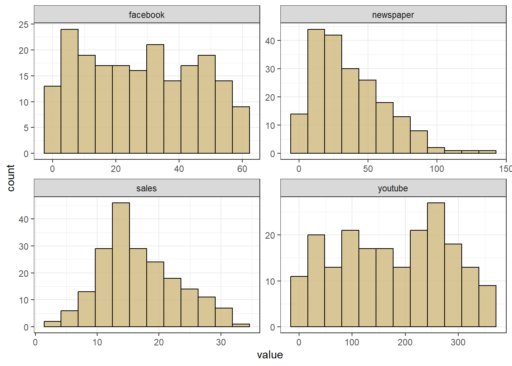
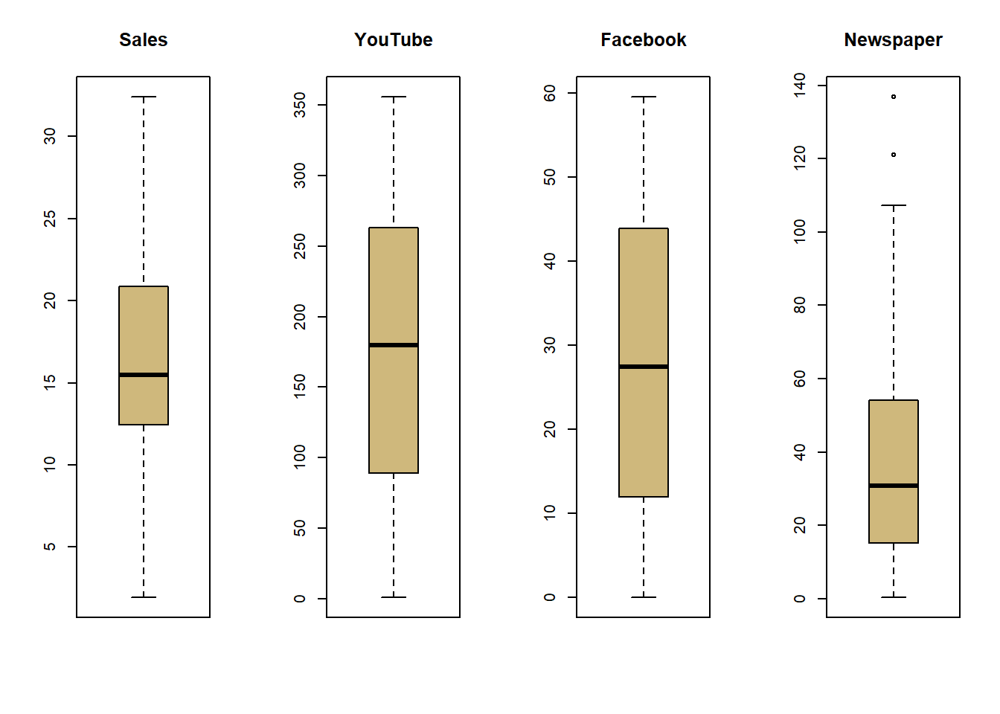
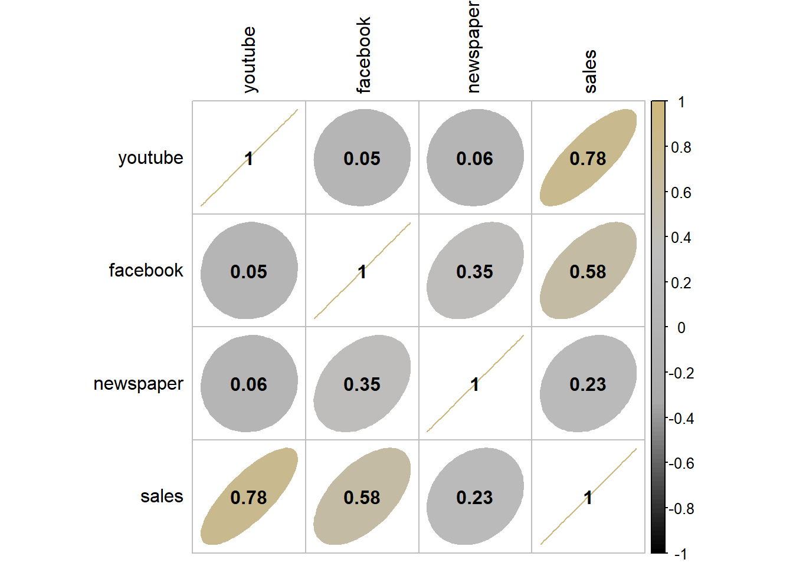
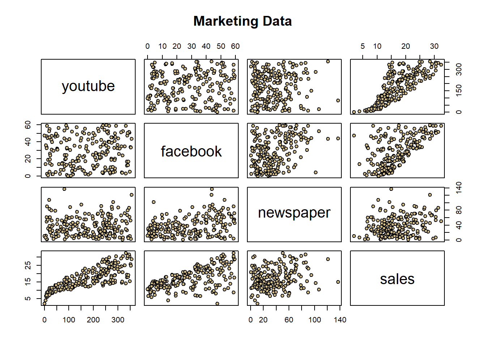
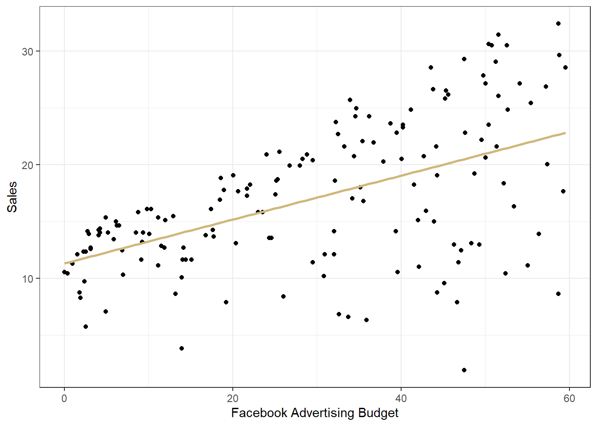
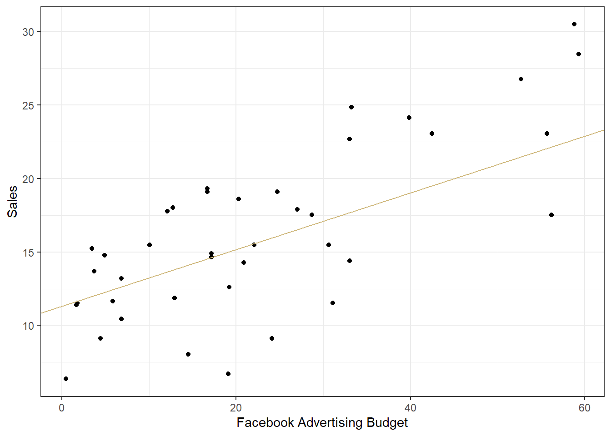

library(testthat)Regression Modeling in R - Part 1
Regression modeling in R - a first pass
The following dataset contains observational measurements related to the impact of three advertising medias on sales of a product, \(P\). The variables are:
youtube: the advertising budget allocated to YouTube. Measured in thousands of dollars;facebook: the advertising budget allocated to Facebook. Measured in thousands of dollars; andnewspaper: the advertising budget allocated to a local newspaper. Measured in thousands of dollars.sales: the value in the \(i^{th}\) row of the sales column is a measurement of the sales (in thousands of units) for product \(P\) for company \(i\).
The advertising data treat “a company selling product \(P\)” as the statistical unit, and “all companies selling product \(P\)” as the population. We assume that the \(n = 200\) companies in the dataset were chosen at random from the population (a strong assumption!).
library(ggplot2)
marketing = read.csv(url("https://raw.githubusercontent.com/CUBuffs/Statistical-Learning-/main/Modern%20Regression%20Analysis/Datasets/marketing.txt"), sep = "")
head(marketing, 15) youtube facebook newspaper sales
1 276.12 45.36 83.04 26.52
2 53.40 47.16 54.12 12.48
3 20.64 55.08 83.16 11.16
4 181.80 49.56 70.20 22.20
5 216.96 12.96 70.08 15.48
6 10.44 58.68 90.00 8.64
7 69.00 39.36 28.20 14.16
8 144.24 23.52 13.92 15.84
9 10.32 2.52 1.20 5.76
10 239.76 3.12 25.44 12.72
11 79.32 6.96 29.04 10.32
12 257.64 28.80 4.80 20.88
13 28.56 42.12 79.08 11.04
14 117.00 9.12 8.64 11.64
15 244.92 39.48 55.20 22.80Exploratory data analysis
Before we model the data, let’s first explore the data. We’ll first check to see whether there are any missing values in the dataset. Then, we’ll take a look at some univariate and bivariate summaries of the data.
Note that, in an earlier lesson, we discussed the importance of randomly partitioning the data, and using one subset of the data for exploratory data analysis, another for fitting the model, and then possibly a third for model validation. However, for this dataset, there are only \(n = 200\) units in the sample, and so there is not enough data for three robust subsets. So, we’ll proceed to perform EDA on the entire dataset, but noting that our conclusions may be less certain because of the possibility of error due to “double dipping”.
Missing data and univariate explorations
Are there any missing values coded as NA? Or, are there any odd values for variables, e.g., 9999 or 0 possibly standing in for a missing value?
dim(marketing)[1] 200 4cat("There are", sum(is.na(marketing)), "missing data values.")There are 0 missing data values.summary(marketing) youtube facebook newspaper sales
Min. : 0.84 Min. : 0.00 Min. : 0.36 Min. : 1.92
1st Qu.: 89.25 1st Qu.:11.97 1st Qu.: 15.30 1st Qu.:12.45
Median :179.70 Median :27.48 Median : 30.90 Median :15.48
Mean :176.45 Mean :27.92 Mean : 36.66 Mean :16.83
3rd Qu.:262.59 3rd Qu.:43.83 3rd Qu.: 54.12 3rd Qu.:20.88
Max. :355.68 Max. :59.52 Max. :136.80 Max. :32.40 marketing$facebook[order(marketing$facebook)[1:5]][1] 0.00 0.36 0.48 0.96 1.56There are no values coded as NA. facebook does have 0 as a value, but it’s not clear that this is a missing value. It’s plausible that some company simply does not have a Facebook marketing budget. There don’t appear to be any values like 9999 indicating missing values. So, we’ll proceed under the assumption that we have all the data!
Construct a histogram of each of the variables and comment on their distributions.
library(purrr)
library(tidyr)
library(ggplot2)
marketing %>%
keep(is.numeric) %>%
gather() %>%
ggplot(aes(value)) +
facet_wrap(~ key, scales = "free") +
geom_histogram(bins = 12, color="black", fill ="#CFB87C", alpha = 0.8) +
theme_bw()
The histograms of each variable provide insight into the distributions of the variables. None look normal; however, there is no requirement that the predictors (facebook, youtube, newspaper) come from a normal distribution. The response, sales does not look all that normal, but as we’ll see, some regression analyses can be fairly robust to deviations in the normality assumption.
As you may have noticed from the histogram of newspaper, there may be a few outliers. Let’s look at some boxplots to see in further detail. Note that R classifies potential outliers by the “IQR criterion”. This criterion means that all observations above \(q_{0.75}+1.5\times IQR\) or below \(q_{0.25}-1.5\times IQR\) are classified as outliers, where
- \(q_{0.25}\) is the first quartile;
- \(q_{0.75}\) is the third quartile.
- IQR is the interquartile range, defined as the difference between the third and first quartile.
A boxplot will “flag” the outliers. Construct a boxplot for each variable and comment on the existence of potential outliers.
par(mfrow = c(1, 4))
boxplot(marketing$sales, main='Sales',col="#CFB87C")
boxplot(marketing$youtube, main='YouTube',col="#CFB87C")
boxplot(marketing$facebook, main='Facebook',col="#CFB87C")
boxplot(marketing$newspaper, main='Newspaper',col="#CFB87C")
cat("The outliers for the Newspaper variable are ", boxplot.stats(marketing$newspaper)$out[1],
" and ",boxplot.stats(marketing$newspaper)$out[2], "." )The outliers for the Newspaper variable are 136.8 and 121.08 .The outliers for the Newspaper variable are 136.8 and 121.08 .
Using the interquartile range criterion, we see that newspaper has two potential outliers. We simply note this for now, and note that outliers can impact the fit of a regression.
Bivariate explorations
Let’s now explore how the variables may or may not relate to each other. First, calculate the correlations between variables. Correlations can help us meaasure the strength of the linear relationship between variables. The bland way to do this is with to cor() function. But try the corrplot() function in the corrplot library (which you’ll need to install in your R environment in Anaconda). Comment on the correlations.
library(corrplot)
### BEGIN SOLUTION HERE
col4 = colorRampPalette(c("black", "darkgrey", "grey","#CFB87C"))
corrplot(cor(marketing), method = "ellipse",
col = col4(100), addCoef.col = "black", tl.col = "black")
### END SOLUTION HERENote that there’s a relatively strong correlation between sales and youtube, and sales and facebook.
However, knowing correlations alone isn’t enough; the correlation coefficient can be misleading if there are nonlinear relationships, and so we should explore the relationships further.
To do so, we’ll look at pairwise scatter plots, i.e., a scatter plot of each variable with each other variable. We should be looking for:
- Relationships between the response and each predictor.
- Relationships between predictor variables. Such relationships are undesirable.
Create all possible pairwise scatter plots of the data (the pairs() function may help). Comment on the observed relationships.
pairs(marketing, main = "Marketing Data", pch = 21,
bg = c("#CFB87C"))
Here are some notes on the relationships:
The relationship between
salesandyoutubeappears nonlinear, with a sharp increase in sales for a small increase in YouTube advertising in the lower range ofyoutube. As more money is spent on YouTube advertising, however, the increase in sales is less prevalent.It’s also worth noting that, as
youtubeincreases, the variability in sales also increases.There appears to be a linear relationship between
salesandfacebook, too, but with a lot of variability, especially for high vales offacebookand lowsales.There doesn’t appear to be a relationship between
salesandnewspaper.There aren’t any other strong trends in the data.
Linear regression modeling
First, let’s randomly split the data into a “training set” and “testing set”. We do this so that we can train/fit the linear model on the training set, and then, if necessary, see how well the model fits (e.g., does it make reasonable predictions?) in the testing set. In this lesson, we will only briefly look at fit metrics on the testing set; but, it’s good practice to split the data in this (or a similar) way when wanting to assess the fit or predictive power of the model.
Write code to randomly select \(80\%\) of the rows from the marketing dataframe. Store these rows in a dataframe train. Then, store the remaining rows in a dataframe called test.
set.seed(11) #set the random number generator seed.
### BEGIN SOLUTION HERE
n = floor(0.8 * nrow(marketing)) #find the number corresponding to 80% of the data
index = sample(seq_len(nrow(marketing)), size = n) #randomly sample indicies to be included in the training set
train = marketing[index, ] #set the training set to be the randomly sampled rows of the dataframe
test = marketing[-index, ] #set the testing set to be the remaining rows
cat("There are", dim(train)[1], "rows and",dim(train)[2],"columns in the training set. ") #check the dimensionsThere are 160 rows and 4 columns in the training set. cat("There are", dim(test)[1], "rows and",dim(test)[2],"columns in the testing set.") #check the dimensionsThere are 40 rows and 4 columns in the testing set.### END SOLUTION HEREThere are 160 rows and 4 columns in the training set. There are 40 rows and 4 columns in the testing set.
The lm() function
R has a great function for fitting and summarizing linear regression models: the lm() function. lm() will fit a linear regression model to data using least squares (or other methods, when specified), and provide many summary statistics. Let’s look at some basics of lm(). As we progress through the course, we’ll learn to work with more and more of the output of the lm() function.
The lm() function may take in several arguments, but only a small number of them are required. The first required argument is the formula: it should be in the following format: response ~ predictor1 + predictor2 + ... + predictorP. If your data are stored in a dataframe (which will often be the case), then the simplest thing to do is specify a second argument, namely data = NameOfDataFrame. Let’s use lm() on the training subset of the marketing data, with just facebook as a predictor. Be sure to use the training data (not the entire marketing data). Store your lm() object in the variable lm_marketing.
After you’ve fit the model using lm(), clearly write out the fitted model and interpret the parameter estimates.
lm_marketing = lm(sales ~ facebook, data = train)
summary(lm_marketing)
Call:
lm(formula = sales ~ facebook, data = train)
Residuals:
Min 1Q Median 3Q Max
-18.573 -2.535 1.069 3.422 10.160
Coefficients:
Estimate Std. Error t value Pr(>|t|)
(Intercept) 11.32793 0.82030 13.810 < 2e-16 ***
facebook 0.19287 0.02396 8.049 1.88e-13 ***
---
Signif. codes: 0 '***' 0.001 '**' 0.01 '*' 0.05 '.' 0.1 ' ' 1
Residual standard error: 5.387 on 158 degrees of freedom
Multiple R-squared: 0.2908, Adjusted R-squared: 0.2863
F-statistic: 64.79 on 1 and 158 DF, p-value: 1.881e-13The summary() function applied to an lm() object gives is plenty of output:
First, the summary function reminds us of the formula for the model, i.e., that
salesis the response andfacebookthe predictor.Next, we have summary statistics for the residuals of the model. Recall that the residuals are defined as \(\varepsilon_i = y_i - \widehat{y_i}\), where \(\widehat{y_i} = \widehat\beta_0 + \widehat\beta_1facebook_i, \,\, i = 1,...,n\) are the fitted values of the model. If the model fits well, the residuals will look roughly normal/random scatter around zero.
Next, we see a table of, among other things, the least squares estimates for the model. In the last module, we learned how to interpret these estimates:
If the model is correct, then if a company spend zero dollars on Facebook advertising, they can expect to sell roughly \(\widehat\beta_0 \times 1000 = 11.33 \times 1,000 = 11,330\) units, on average.
If the model is correct, then, for a \(\$1,000\) increase in the Facebook advertising budget, the company can expect to sell roughly \(\widehat\beta_1 \times 1000 = 0.19 \times 1,000 = 190\) more units, on average.
We’ll ignore the remaining components of the coefficient table for now, but will return to them soon!
We’ll also ignore the residual standard error, \(R^2\), and F-statistic information. We’ll return to this when we discuss regression inference.
Computing regression quantities “by hand”
Let’s connect the lm() function output to the computations that we learned about in class. First, let’s construct the “design matrix”, \(X\), i.e., the matrix with a column of 1's, and then columns for each predictor.
X = cbind(1, train$facebook)
#another way to do this:
#X1 = model.matrix(lm_marketing)
#sum(X-X1)Recall that the least squares solution is: \(\boldsymbol{\widehat\beta} = \left(X^TX \right)^{-1}X^T\mathbf{y}\). To compute this “by hand” in R, we’ll need the transpose function, t(), the operator for matrix multiplication, %*%, and the function for finding the inverse of a matrix, solve(). Use these functions to compute the least squares solution without using the lm() function. Store your result in the variable b, which should end up being a column vector. Be sure to use the training set for this answer. b should match the estimate column from lm().
(Imoprtantly, this is not how lm() in R (or other software packates, like Python) actually computes the least squares estimates. Instead, they use methods that are less computationally expensive. We are computing the least squares estimates in this way to show that the theory from class matches the values from R. The theory will be important for our understanding and interpretation of linear regression.)
y = train$sales
b = solve(t(X)%*%X)%*%t(X)%*%y
b [,1]
[1,] 11.3279292
[2,] 0.1928711Now compute the fitted values and residuals of the model. Store them in the variables yhat and r, respectively.
yhat = X%*%b
#note that these are the same as the fitted values from the lm() function:
sum(yhat - fitted(lm_marketing)) #machine zero[1] 5.062617e-13r = y - yhat
#note that these are the same as the residuals from the lm() function:
sum(r - residuals(lm_marketing)) #machine zero[1] -5.148659e-132.00728322852228e-13
-2.05949840514918e-13
Visualizing the regression model
We will learn a few important visualizations of the linear regression model in the modules to come. For now, let’s just visualize our data with the regression model imposed on it.
Construct a scatter plot of sales (\(y\)) against facebook (\(x\)) from the training data, and plot the fitted line over the data. You can use “base R” functions like plot() and abline(), or be fancy and use ggplot()!
ggplot(train, aes(x = facebook, y = sales)) +
geom_point() +
geom_smooth(method = "lm", col = "#CFB87C", se = F) +
theme_bw() +
xlab("Facebook Advertising Budget") +
ylab("Sales")
Note that the fit looks OK, but that there is a lot of variability in sales, especially for higher values of facebook. Imagine making a prediction for sales for facebook = 60:
yhat_60 = as.numeric(round(coef(lm_marketing)[1] + coef(lm_marketing)[2]*60, 2))The model predicts sales = 22.9: that is, the model predicts that a company with a facebook marketing budget of \(\$60,000\) will sell \(22,900\) units of product \(P\), on average. But look at other measurements near \(\$60,000\); based on the data, sales could be as low as \(9,000\) units or over \(30,000\) units.
Finally, let’s take a look at how the plot would look using the testing data instead of the training data. Ideally, we would want the the model to fit well for the testing data too.
Construct a scatter plot of sales (\(y\)) against facebook (\(x\)) from the test data and plot the fitted line over the data. You can use “base R” functions like plot() and abline(), or be fancy and use ggplot()!
Note that overlaying the regression line on a scatterplot of the data is not a rigorous way of assessing the fit of the model; later on in the course, we will learn better goodness of fit metrics for linear regression.
ggplot(test, aes(x = facebook, y = sales)) +
geom_point() +
geom_abline(intercept = coef(lm_marketing)[1], slope = coef(lm_marketing)[2], col = "#CFB87C") +
#geom_smooth(method = "lm", col = "#CFB87C", se = F) +
theme_bw() +
xlab("Facebook Advertising Budget") +
ylab("Sales")